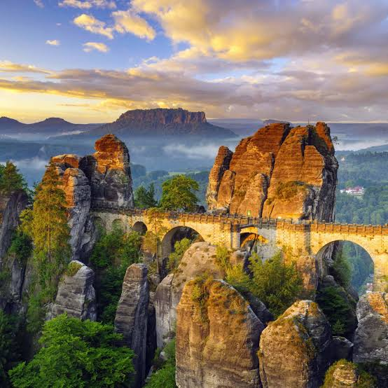
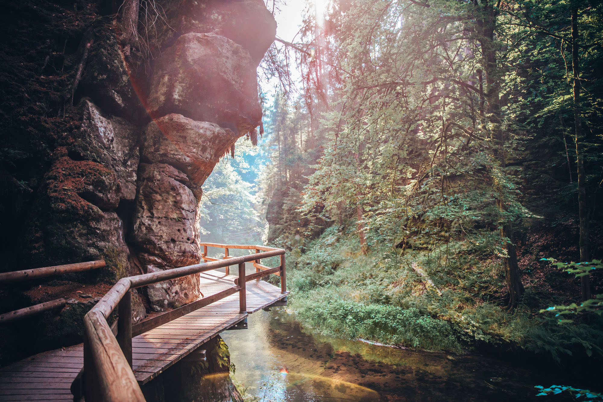
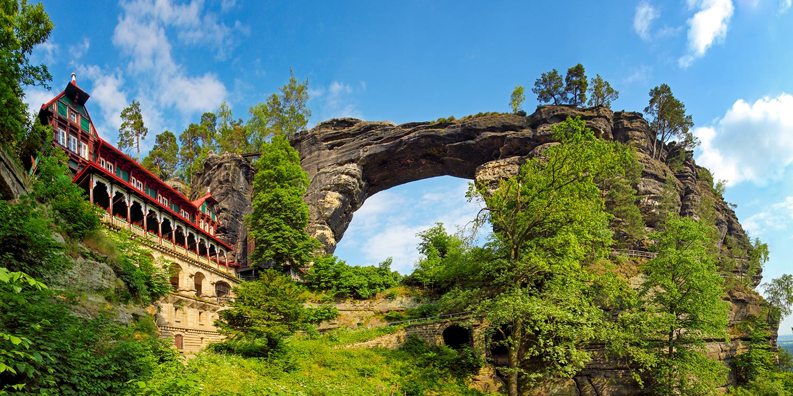
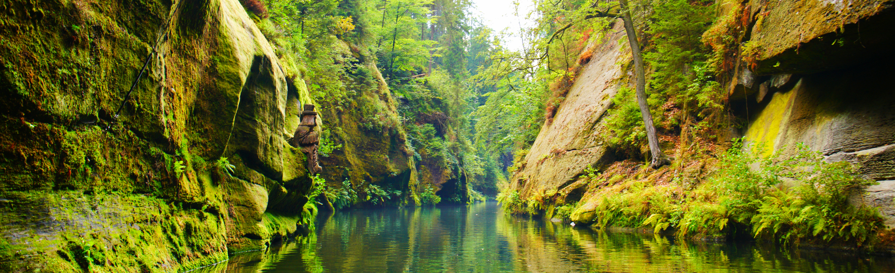

A beatiful national park in northern Czechia, known for sandstone cliffs, deep forests, viewpoints and the famous Pravčická Gate.
Czech Switzerland is one of the most impressive natural areas in Czechia. The landscape combines sandstone formations, forests, valleys and viewpoints overlooking the surrounding country side.
The national park is a popular destination for hiking and exploring nature. Its unique rock formations and peaceful forests make it very different from the historic towns elsewhere in Czechia.

Pravčická Gate is the most famous landmark of Czech Switzerland. This impressive natural sandstone arch rises above the surrounfing forest and has become one of the symbols of the region.
Visitors can reach viewpoints around the gate by hiking through the forest. The surrounding cliffs and valleys offer beatiful views of the unique landscape.

Edmund's Gorge is a narrow rocky valley surrounded by steep sandstone cliffs and forests. The Kamenice River flows through the gorge and creates a peaceful atmosphere.
Visitors can explore the george along walking trails and experience a different side of national park, surrounded by rocks, trees and the river.

Czech Switzerland offers many opportunities for hiking and exploring nature. Visitors can discover sandstone cliffs, forest trails, viewpoints and narrow valleys throughout the national park.
The combination of dramatic rock formations, forests and peaceful landscapes makes Czech Switzerland on of the most memorable natural destinations in Czechia.